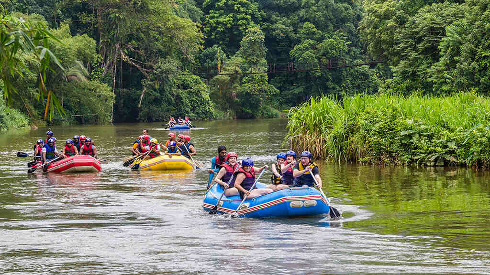

Nível: InicianteRafting Família & Contemplação
Duração: 2 horas | Idade mínima: 6 anos
Perfeito para crianças, idosos e aventureiros de primeira viagem. Este percurso passa por águas calmas e corredeiras leves (Classe I e II), priorizando a segurança e a contemplação da natureza. Durante o trajeto, fazemos uma parada programada para banho de rio e fotos com a belíssima fauna local.
R$ 100,00 / pessoa